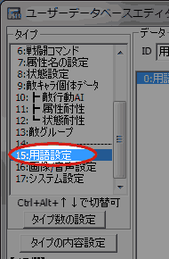
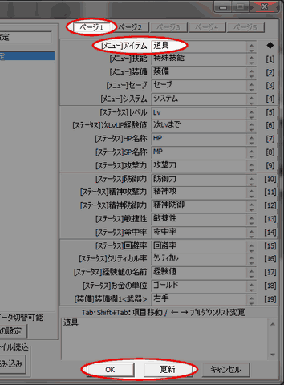
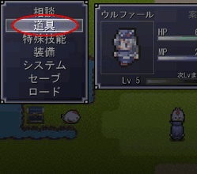
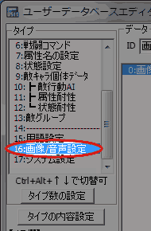
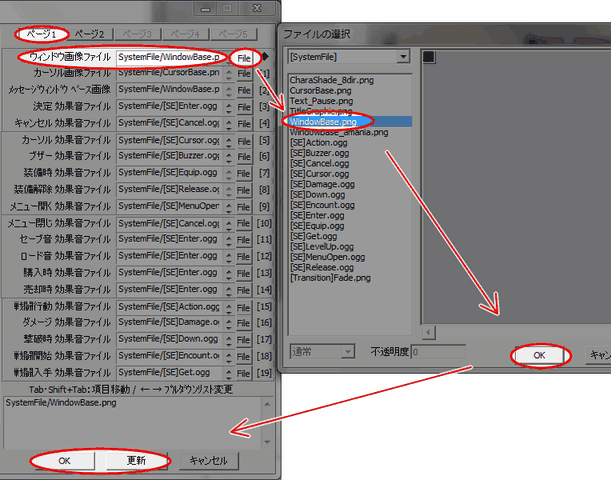
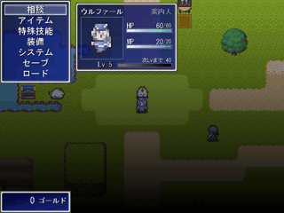
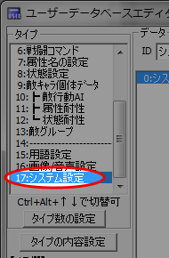
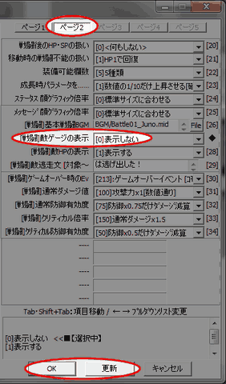
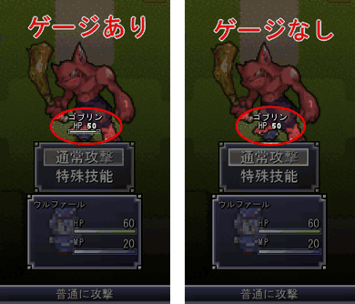

ユーザーデータベース
右のようなウィンドウが表示されます。

基本システムのユーザーデータベースでは、ゲームの中で色々な
ところに使われている用語や画像を変更することができます。
今回は、メニューの「アイテム」を「道具」に変える設定、
ウィンドウ画像を変える設定、敵のHPゲージを消す設定を
それぞれ行い、どうすればどんなことが設定できるのかを理解します。
| 【1】 ユーザDBを開く ユーザーデータベース 右のようなウィンドウが表示されます。 |
|
| 【2】 編集するタイプの選択 ウィンドウが開いた直後は「タイプ」が「技能」になっています。 「15:用語設定」をクリックして下さい。 |
 |
| 【3】 項目の編集 「ページ１」の項目0「[ﾒﾆｭｰ]アイテム」の入力欄に、 「道具」と入力してください。 入力出来たら、更新ボタンかＯＫボタンを押して下さい。 |
 |
| 【4】 テストプレイ テストプレイをしてみましょう。 メニューの「アイテム」という項目の名前が 「道具」に変わりました。変わったのは名前だけで、 機能には一切違いはありません。 |
 |
| 【1】 ユーザDBを開く ユーザーデータベース 右のようなウィンドウが表示されます。 |
|
| 【2】 編集するタイプの選択 ウィンドウが開いた直後は「タイプ」が「技能」になっています。 「16:画像/音声設定」をクリックして下さい。 |
 |
| 【3】 項目の編集 「ページ１」の項目0「ウィンドウ画像ファイル」の右にある 「File」ボタンを押すと、画像が入っているフォルダを参照できます。 この中から「WindowBase.png」を選択して、OKボタンを押しましょう。 入力欄に「SystemFile/WindowBase.png」が入力されました。 更新ボタンかＯＫボタンを押して保存してください。 |
 |
| 【4】 テストプレイ テストプレイをしてみましょう。 メニューを開くと、文字の背景にあるウィンドウ画像が 変わっているはずです。 |
 |
| 【1】 ユーザDBを開く ユーザーデータベース 右のようなウィンドウが表示されます。 |
|
| 【2】 編集するタイプの選択 ウィンドウが開いた直後は「タイプ」が「技能」になっています。 「17:システム設定」をクリックして下さい。 |
 |
| 【3】 項目の編集 「ページ２」の項目27「[戦闘]敵ゲージの表示」を変更します。 プルダウンリストから「[0]表示しない」を選択します。 更新ボタンかＯＫボタンを押して保存してください。 |
 |
| 【4】 テストプレイ テストプレイをしてみましょう。 戦闘時の相手のHPゲージが見えなくなりました。 |
 |
| ■UDB15:用語設定 について 今回はメニューの項目「アイテム」の名前を変更しましたが、 その他にもHPやレベル、特殊技能、お金の単位など ゲームで使用する用語の変更ができます。 「SP」を「MP」に変えたり「セーブ」を「日記」に変えたりと 色々な変更ができますが、分からなくならない程度に…。 |
| ■UDB16:画像/音声設定 について 今回はここのウィンドウ画像ファイルを変更しました。 ここではキャンセル時やセーブ時に鳴る効果音など、 呼び出される頻度の高い効果音と画像ファイルを変更できます。 効果音は、Fileボタンを押して開くウィンドウに表示されている SystemFileフォルダのほか、SEフォルダの方にもあります。 このウィンドウの左上にあるプルダウンリストで 「SE」フォルダを選択すると開くことができます。 |
| ■UDB17:システム設定 について このデータベースで出来ることは、大まかに 「メニューのこと」と「戦闘の設定」に分けられます。 ・[0]〜[18]のメニュー欄コマンドと特殊メニューでは、 メニューの内容、並び順などを変えられたり、 好きなコモンイベントをメニューに追加したりできます。 コモンイベントをメニューに追加する場合は、 「特殊メニュー(A〜D)名称/呼出コモン」に登録してから 「メニュー欄コマンド」で呼び出してください。 ・[19]〜の項目は、状態異常やHPの表示方法、ダメージ計算式、 戦闘後のHP・SPと戦闘不能の扱いやデフォルトBGMなど、 ゲーム全体の戦闘に共通する設定が行えます。 (キャラクター個々の設定は主人公が可変データベース0〜5、 敵キャラクターがユーザデータベース9〜12で行えます。) 成長時パラメータを「数値の1/10だけ上昇させる」設定では、 十の位の数を基本上昇数として、一の位の数の割合で＋1されます。 「32」と入力していれば、80%の確率で3、20%の確率で(＋1されて)4になります。 |
＜執筆者：ウディタ公式ガイド執筆コミュ。＞